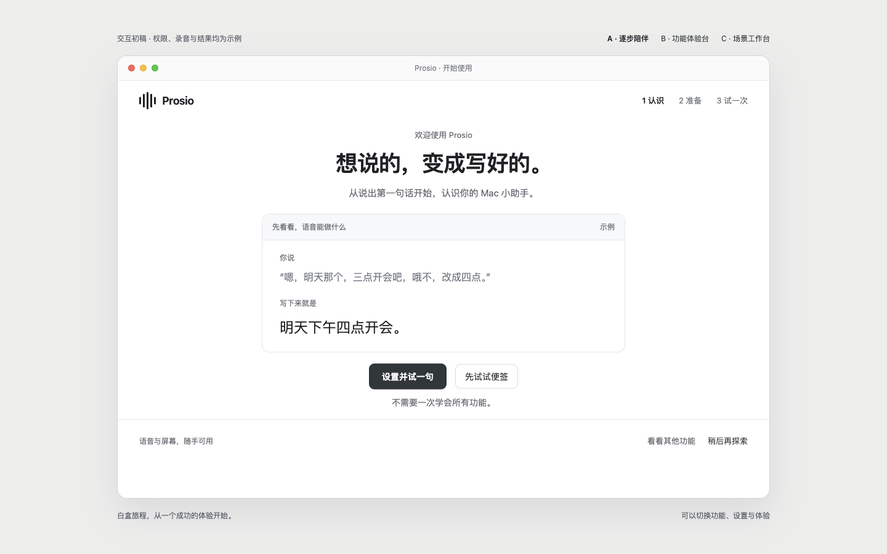
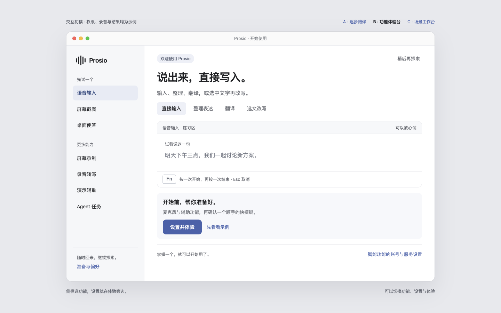
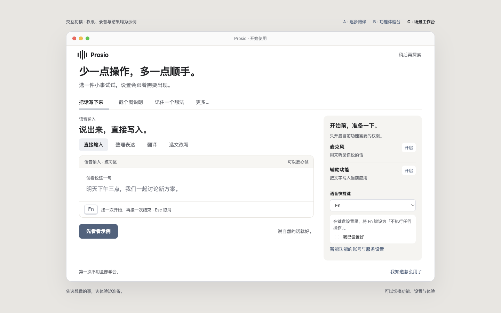

<!doctype html><html lang="zh-CN"><meta charset="UTF-8"><meta name="viewport" content="width=device-width,initial-scale=1"><title>Prosio 启动导引 · 三个方向</title><style>*{box-sizing:border-box}body{margin:0;background:#f0f1f3;color:#252830;font:15px/1.7 -apple-system,"PingFang SC",sans-serif}main{max-width:1200px;margin:auto;padding:48px 36px}h1{font-size:29px;font-weight:600;margin:0 0 8px}p{color:#616776;margin:0 0 26px}article{margin-bottom:32px}a{text-decoration:none;color:inherit}header{display:flex;justify-content:space-between;align-items:center;margin-bottom:12px}h2{font-size:20px;margin:0}img{width:100%;border:1px solid #d4d7df;border-radius:12px;display:block}.desc{font-size:14px;color:#5d6471}.action{color:#435f9c;font-size:14px}a:focus-visible{outline:3px solid #809ddb;outline-offset:4px}</style><main><h1>第一次打开，轻松知道怎么用。</h1><p>三个可点击方向。点击画面打开原型，试试功能切换、设置反馈与示例体验。</p><article><a href="a.html"><header><div><h2>A · 逐步陪伴</h2><div class="desc">白盒旅程，从一个成功的体验开始。</div></div><span class="action">打开可点击原型 →</span></header></a></article><article><a href="b.html"><header><div><h2>B · 功能体验台</h2><div class="desc">侧栏选功能，设置就在体验旁边。</div></div><span class="action">打开可点击原型 →</span></header></a></article><article><a href="c.html"><header><div><h2>C · 场景工作台</h2><div class="desc">先选想做的事，边体验边准备。</div></div><span class="action">打开可点击原型 →</span></header></a></article></main></html>